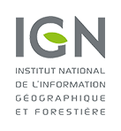
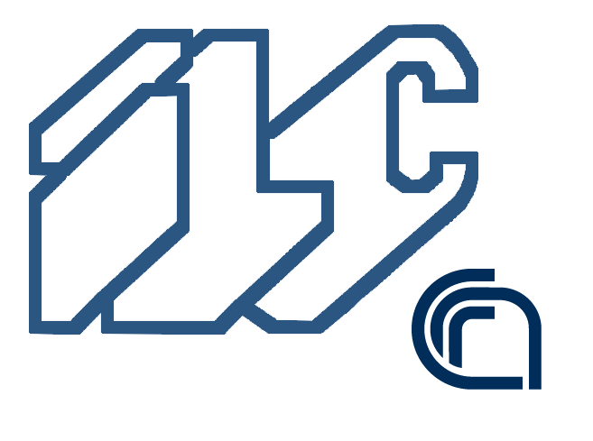
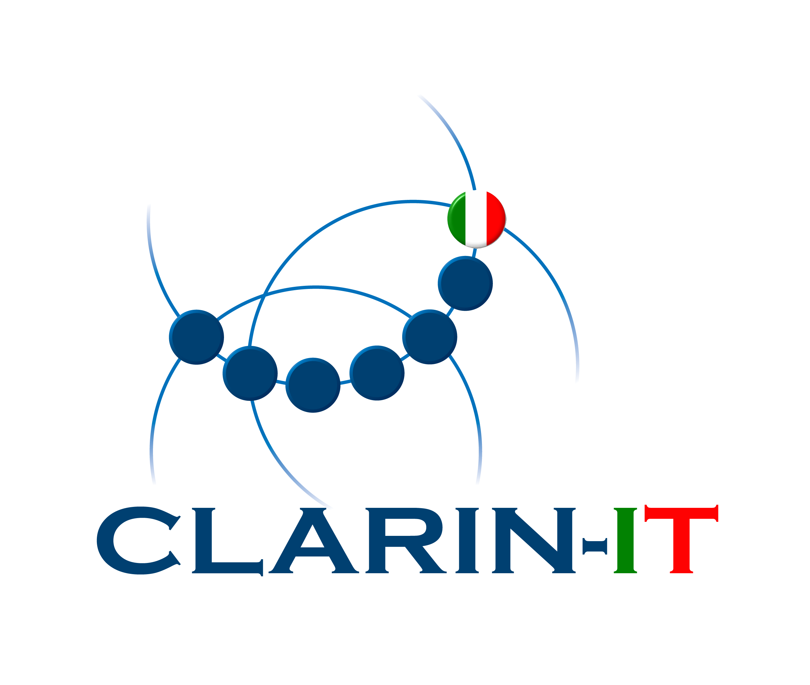

A place For Places aims to investigate the latest developments of geo-historical gazetteers and their impact in natural language processing and digital humanities studies. In particular the workshop will deal with crucial problems concerning the geo-spatial models of representation for ancient places, and the management of temporal information for geographic features in general. Current projects concerning the publication of geo-historical data as Linked Open Data, as well as their exploitation for annotating and enriching texts will also be discussed, alongside with more theoretical issues on vocabularies and ontologies. A group of well known invited scholars will hold 15 minutes presentations, discussing different and approaches to the topic, ranging from engineering, data models, standards and publication, corpus annotation models, visualization. Finally, an interactive discussion with workshop attendees as well as a sum up panel will constitute an occasion for the community to gather together and harmonize efforts
The workshop is endorsed by the The GeoHumanities Special Interest Group (SIG)
of the Alliance of Digital Humanities Organizations
When: Monday, 11/Jul/2016: 9:30am - 6:00pm. Please save the date
Where: Kraków, Poland
Co-located with DH2016
Organisers:
Carmen Brando |
Francesca Frontini |
 |
 |
 |